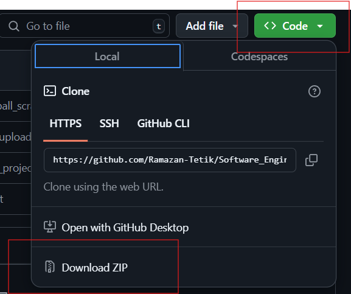
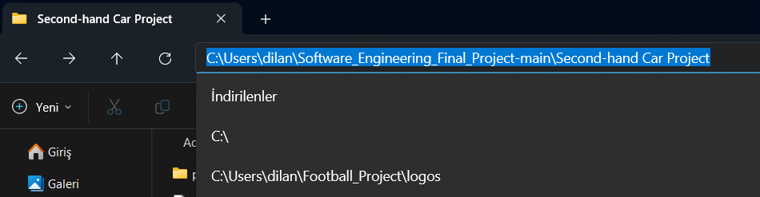

Second-hand Car Application
User Manual:Second-Hand Car Project
User Manual: Second-Hand Car Project
Team Members
- Ramazan Tetik – 211805044
- Dilan Nihadioğlu – 211805072
- Gökhan Ergül – 211805060
- Esra Aydın – 211805079
- Azime Şimşek – 211805055
- Ali Kaynakçı – 211805061
- Ahmet Muhammet Aydın – 211805036
- Sadık Can Barut – 211805065
- Ahmet Yasin Aydın – 211805059
- Burak Cankurt – 211805069
-
Github: You can view the project's code on GitHub: Software Engineering Final Project.
Introduction
This application is designed for collecting, filtering, and analyzing vehicle data. Users can dynamically fetch data from arabam.com, autoscout24.com, and cars.com and perform various filtering operations on this data. Each retrieved dataset is displayed in a card format on the relevant page and can be downloaded as a CSV file.
System Requirements
- Operating System: Windows 10 or later, macOS, Linux
- Storage: Minimum 500 MB of free space
- Software:
- Python 3.9 or later
- Selenium
- Streamlit
- pandas
- Web Browser: Google Chrome (latest version)
Installation Guide
- Visit the GitHub repository.
- Click the "Code" button in the top-right corner and select "Download ZIP" to download the files.

- Extract the downloaded ZIP file to an appropriate folder on your computer.
- Open the terminal or command prompt and navigate to the project folder:

cd Software_Engineering_Final_Project
- Enter the Second-hand Car Project folder:
cd Second-hand Car Project
- Install the required dependencies by running the following command:
pip install -r requirements.txt
- Start the application using the following command:
streamlit run Homepage.py
User Interface Overview
- Homepage: Contains links to all pages. Includes a total of 6 pages.
- CSV Data Pages (3 Pages): Data collected from arabam.com, autoscout24.com, and cars.com is displayed here in card format and can be downloaded as CSV files.
- Dynamic Data Fetching Pages: Each site has a dedicated dynamic data fetching page. Dropdown menus allow users to select brand, model, and other filtering options. Data can then be fetched directly.
Features and Functionalities
- Pre-Collected Rich Datasets: Analyze thousands of pre-collected data points from three different websites.
- Dynamic Data Fetching: Fetch data in real-time based on user selections.
- Filtering: Filter data by criteria such as brand, model, mileage, and price range.
- Card Format Display: Each data point is presented in a well-organized and detailed card format.
- Data Download: Download customized data in CSV format. Additionally, dynamically fetched data can also be downloaded in CSV format.
- Automation: Fetch data automatically using Selenium without manual intervention.
Usage Instructions
Homepage
Contains links to pages for data and operations.
CSV Data Pages
- Select a site (arabam.com, autoscout24.com, cars.com).
- Choose filtering criteria such as brand and model from dropdown menus.
- Click the "Search" button.
- View and filter pre-collected data.
- Use the "Download CSV File" button to download the data.


Dynamic Data Fetching
- Select a site (arabam.com, autoscout24.com, cars.com).
- Choose filtering criteria such as brand and model from dropdown menus.
- Click the "Fetch Data" button.


Downloading Results
After filtering, use the "Download CSV File" button to download the data.
Troubleshooting and Maintenance
- Application Not Starting: Ensure that Python and the libraries listed in the requirements file are correctly installed. If needed, install them individually.
- Data Not Fetching: Avoid clicking the same buttons multiple times, as this may cause traffic on the site. Ensure you click the "Retrieve Data" button.
References